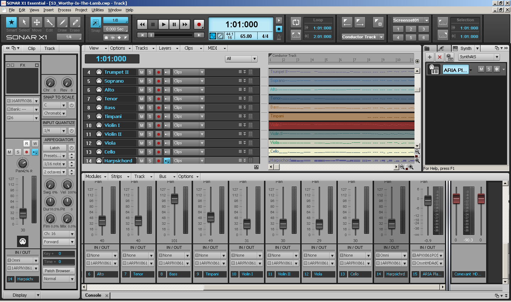

, composer of the Messiah, with the last few measures of the Amen finale from his original score.")
Boulder Messiah Sing-Along
Messiah Practice MP3s Technology
- The starting point for these practice pieces is a set of MIDI files produced by Dan Viens sometime in the 90's. I don't
know what technologies he used to do the sequencing, but having these files as a 'starting point' saved me dozens if not hundreds of hours
of work entering in all of the notes into a MIDI sequencer program such as Cakewalk Sonar (see below). Thank you Dan... In addition to the
SATB parts, these MIDI files also contain the parts for a variety of instruments per Handel's score, namely:
- Violins I and II
- Viola
- Cello
- Oboe I and II
- Bassoon
- Harpsichord
- Trumpets I and II
- Timpani
- The MIDI file for each piece was read into Cakewalk Sonar X1 Essential, a MIDI sequencing computer program that runs on Windows.
- Each MIDI track (there is one MIDI 'track' for each orchestral instrument and each SATB voice part) in the piece is assigned to a digital instrument in the Garritan Personal Orchestra (GPO) software synthesizer. Garritan has digitally sampled practically all of the instruments used in an orchestra (some of their digitizing involved rare instruments such as Stradivari, Gagliano, and Guarneri violins). So the sounds that you hear as you listen to the MP3 files are sounds recorded from actual instruments. For the voice parts, I experimented with a variety of instruments, finally settling on using Bb clarinets to simulate the human singing voice.
- In Sonar, the volume of each track (instrument tracks and SATB voice tracks) is adjusted to produce the desired result. I also corrected any "incorrect" notes that I found while listening to the pieces (I put "incorrect" in quotes because those notes may have been correct for the edition of the Messiah that Dan used, but they were "incorrect" with respect to the Schirmer edition).
- Sonar is used to 'play' the piece. Playing the piece involves having Sonar send the MIDI information -- every note for every voice and instrument -- to its assigned "digital instrument" in GPO. GPO in turn converts the MIDI information (note pitch, duration, attack, etc.) into the sound of the instrument playing that note. That 'sound' information is written to a .wav file on disk. Each piece is played a number of times -- e.g. one time with Soprano lounder, another time with Alto louder, etc. -- and each "performance" is captured into its own .wav file. These .wav files are CD quality -- 44,100 sound samples/second for both left and right audio channels -- but are very large. For example, the 'all voices equal' .wav file for the "Worthy is the Lamb" finale is 130MB (!!!) in size.
- The LAME MP3 encoder is used to convert each .wav file to its corresponding .mp3 file. MP3 uses some fancy math to compress the digitized sound information into a much smaller space with only a minimal (and usually inaudible) loss of sound quality. "Worthy is the Lamb" in MP3 format is 'only' 9MB long (6% of the original .wav file's size).
- Each MP3 file has ID3v2 'tags' inserted into it, using the mp3agic Java API library and some Java code that I wrote. These tags provide information such as title, composer, track #, etc. When you play any MP3 file on your computer, iPod, etc., the player typically looks for these tags and, if present, will display their information to you on the player's display.
- All of the MP3 files were uploaded to the web server that you are accessing right now :-)
- This process is repeated for each of the 53 pieces in Messiah, producing a total of 139 MP3 files for your listening and practicing enjoyment.
- Questions? Please send an e-mail.
